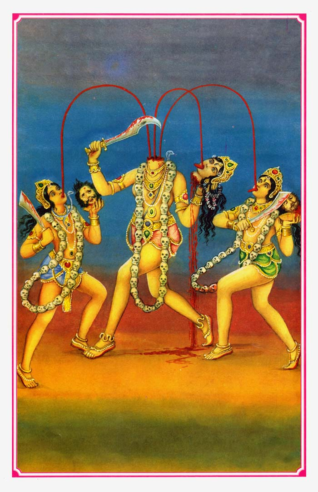
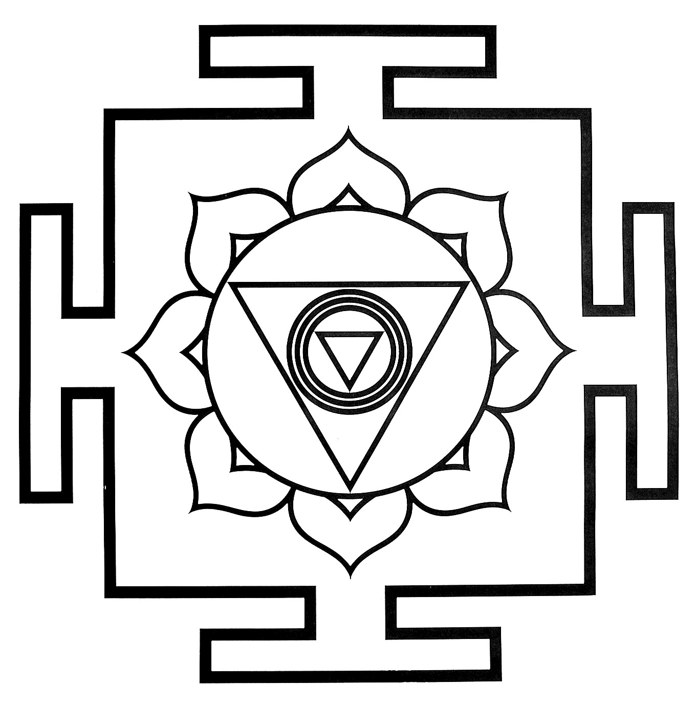
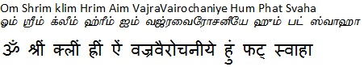
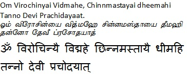

|
|||||
lordess sakthi
DASA MAHA VIDHYA
Chhinnamasta
|
 |
 |
|
The Sixth
form of Mahavidya is Chhinnamasta. Chhinnamasta words are
made up of two words: the first incised and II Msta, the
meaning of these two words, 'incised separate or isolated'
and 'Msta: forehead, thus which are separate from the
forehead flesh chhinnamasta called. Goddess cut his head
with his own hands and holds it in his hands and is also
known by other names like the huge Chandika.Divine Goddess
Durga is the form of Chinnamasta , Goddess herself is the
three qualities; Satvik, Rajasik and Tamasik,Represent three
triangularities. Goddesses represent the Universe's
transformation cycle, the entire universe is moving through
this cycle. Being balanced and constructive of destruction
is very essential for the smooth operation of the universe.
Goddess Chinnamasta is worshiped in Jain and Buddhism, and
in Buddhism, Devi is famous as the name of Chinnumunda
Vajravrawi . |
|
Beeja Mantra  Gayatri  |